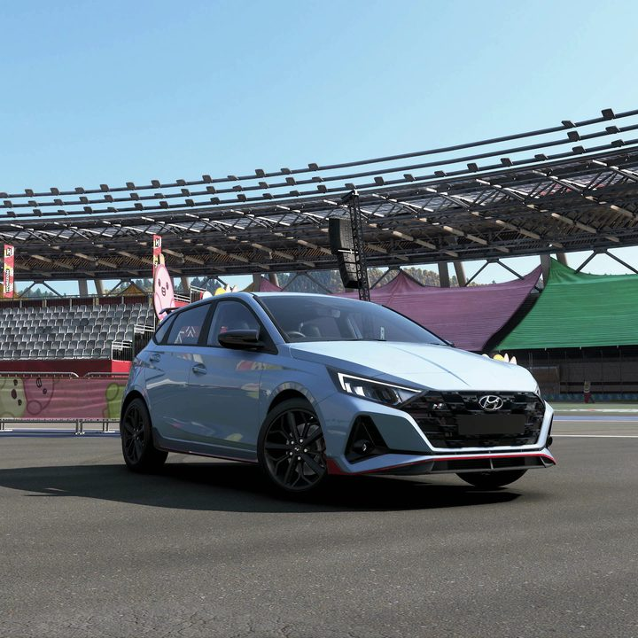

Weekly Challenge5 очков
Hot Hatch-a Tea
Условие: Последовательно на 2021 Hyundai i20 N: сесть за руль, получить 4 навыка Speed, выиграть любую Street Race и проехать 3 круга Edamame Time Attack. Награда: 25 000 CR.
Как выполнить: Машина продаётся в Autoshow за 48 000 CR. Для навыков Speed разгоняйтесь по шоссе, затем выиграйте короткую уличную гонку. На Edamame нужен только финиш трёх кругов — целевого времени нет.
Автомобиль и тюнинг: 2021 Hyundai i20 N B600 — 752 562 454 (актуальный совет сообщества; в игре проектом не проверен).